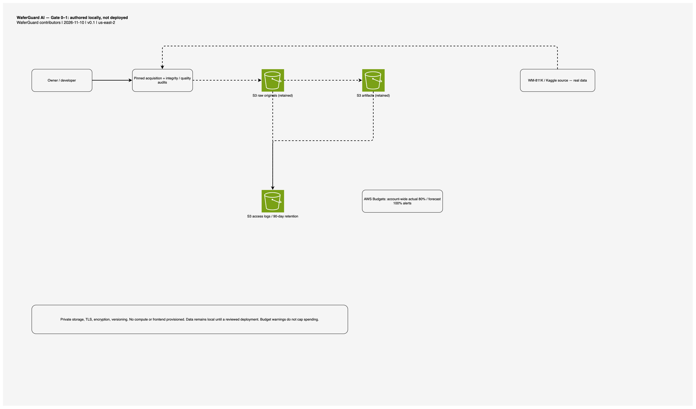
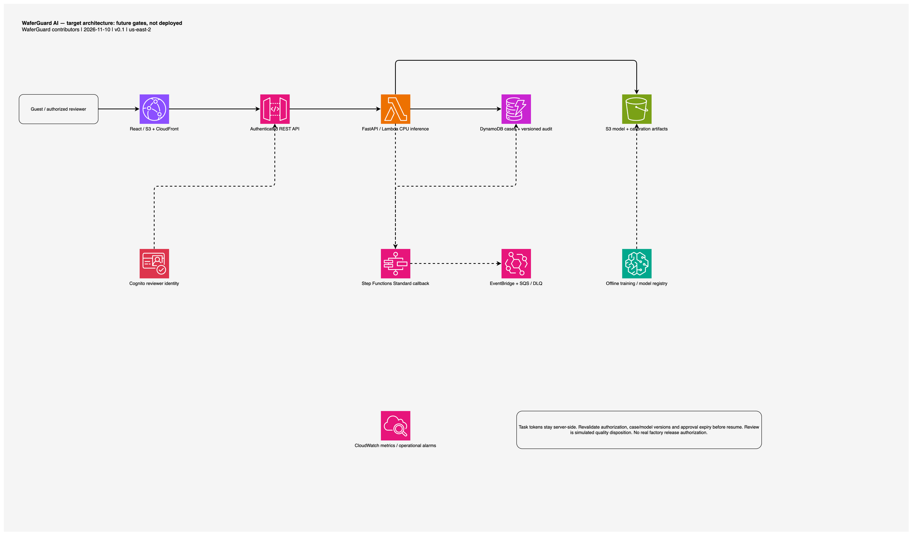
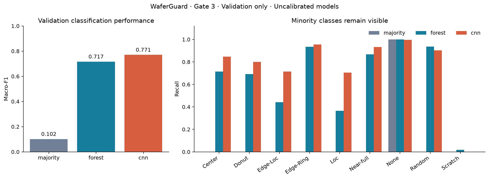
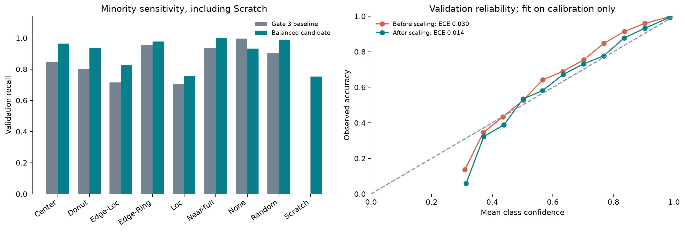

WaferGuard contributors · Semiconductor ML engineering
WaferGuard AI
Uncertainty-aware wafer pattern classification with calibrated computer vision and auditable human review. This index presents the foundation and measured dataset evidence.
Gate 4 · Frozen test evaluated · Promotion blocked
The calibrated candidate scored held-out macro-F1 0.7265 and Scratch recall 55.6%. Its frozen policy falsely accepted four critical cases. Promotion and operational automatic acceptance are blocked; no application or AWS model is deployed.
Review the evidence
- Gate 4 — frozen evaluation and failed release qualification
- Calibration, selective risk and failure analysis
- Gate 3 — trained baselines and measured validation results
- Experiment configuration and reproducibility
- Gate 2 — preprocessing and split evidence
- Final benchmark and class coverage
- Gate 0 — foundation and remaining cloud checks
- Gate 1 — real source acquisition and quality
- Data card and measured class counts
- Leakage findings and split feasibility
- Raw aggregate quality measurements
Design and operation

View the future target architecture



Next decision
Review Gate 4 before further modelling or a manual-review-only research workflow. The held-out failure is preserved; no thresholds were retuned on it. Final splits preserve lots and original/encoded duplicate identities. The source train/test assignments share identical maps despite having separate lot names.
Reproduce local checks with make check; instructions are in README.md. Markdown links may open as source files in a local browser.